ROBÓTICA
Conceitos básicos
A trigonometria é o ramo da matemática dedicado ao estudo das proporções entre os lados e os ângulos de um triângulo. Além disso, ela marca presença em diversos campos do conhecimento, como física, química, biologia, geografia, astronomia, medicina e engenharia.

As funções trigonométricas são aquelas associadas aos triângulos retângulos, que possuem um ângulo de 90°. Elas são representadas pelo seno, pelo cosseno e pela tangente.